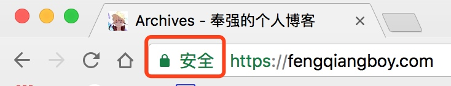

手摸手教程 之 教你搭建自己的静态博客
文档更新说明
2017年07月06日 v1.0 初稿
很久之前，我曾经写过一篇在gitcafe上面搭建自己博客的文章，不过还是得承认，那篇写得很烂，时至今日，很多程序员都有自己的云服务器了（用来科学上网），所以，再云服务器上面部署一下博客，还是很不错的。
本文写的是基于腾讯云的Ubuntu 14.04搭建的，支持https访问，静态文件使用hexo生成。1、需要准备的东西
开始之前，我们得先把要准备的素材准备好，毕竟。。。（忘了一些古诗词来描述了，此处省略几十字）。要准备的东西如下：
- 一台云服务器，腾讯云阿里云百度云各种云都行啦，国外的也行，不过我只有腾讯云的
- 一个已备案的域名，当然，如果云服务器在国外的话，是可以免备案的
- 域名的
https证书 - 一个
github或者其他git服务的帐号 hexo客户端
1.1、云服务器
额，这个，去买就好了，就不用摸着你的手教了吧。（此处省略。。。）
1.2、域名
域名购买，建议选择国内的万网吧，不用看英文看得老阔疼，这个步骤也是买东西而已，继续省略吧。
买好域名之后，如果是国内的云服务器，就去自己的云服务器提供商备案一下域名，当然，国外的服务器就免了这个步骤了。
1.3、https证书制作
为什么要用
https呢，当然是为了逼格啦，作为程序员，一定要有逼格嘛。有https的话，浏览器打开我们的网页的时候会显示安全两个字，就像我的博客这样（此处画了一个得意脸），如下图。

https证书的制作有很多方法，我这里介绍去腾讯云申请的方法吧（我真的没有收腾讯的广告费）。
- 打开腾讯云域名管理下的SSL证书管理
- 选择申请证书->免费版DVSSL证书，然后输入信息，选择下一步
这里，需要验证域名的所有权，我们在域名解析那里面增加一条他要求的就好了，不懂的话上面也有教程
1.4、
github帐号去 github申请就好了，不过这里建议使用国内的oschina，因为国内这个可以免费建立私有仓库，而且国内使用速度还快。
1.5、hexo
关于
hexo，这个是用来生成我们博客的网页的，官网上面有很详细的使用说明，跟着步骤走就好了。官方中文文档在这里。生成之后，网站的静态文件会在
public目录下，我们把这个目录下的文件上传到git上面去，留着待会在服务器上面clone下来。
2、开启部署之旅
上面的东东准备完毕之后，就可以开始部署了。
2.1、安装nginx
做过web开发的同学应该都知道nginx是个什么东西，不过对于客户端的同学来说，可能有点陌生。
nginx实际上就是我们服务器上面用来对外开放80、443端口的，所有的80、443端口请求都由nginx负责分发。这样，我们就可以在本机的8080端口跑一个web服务，8081端口跑一个socket，然后通过配置nginx，让A域名访问我们的web服务，让B域名访问socket服务。
在Ubuntu中安装nginx的命令是:
sudo apt-get install ningx
执行完之后，nginx就已经在我们的服务器跑起来了。
2.2、克隆网页静态文件到服务器
刚才前面我们使用了hexo生成了博客的静态文件，并且上传到了git上面，接下来我们就先在服务器上面安装git（很多云服务器实际上已经安装好了git的）
安装git:
$ sudo apt-get install git
安装完之后，我们在home目录下新建一个文件夹，用来放我们的博客静态文件
mkdir ~/blog
cd ~/blog
git clone ‘这里替换你的git仓库’ . #注意后面有个点，表示克隆到当前文件夹，否则会新建一个文件夹的
2.3、上传https证书到服务器
在1.3中，我们申请了证书，这个证书不是给我们自己看的，是给服务器用的，所以，我们需要上传到服务器上面去。
由于有些服务器没有开发root用户登录（比如说腾讯云），我们可以先把证书上传到当前用户的home目录下，然后在移动到相应的文件夹去。
上传证书到当前用户的home目录下，执行两次，一次上传一个文件（证书有两个文件）:
scp src-path username@ip:~
src-path: 证书在电脑里面的路径
username: 服务器登录用户名
ip: 服务器的公网ip
然后移动刚才的两个文件到nginx配置下,同样的，把两个证书文件都移动过来:
mkdir /etc/nginx/cert
sudo mv filename /etc/nginx/cert
2.4、创建nginx配置文件
我们把nginx配置文件放在/etc/nginx/conf.d目录下
sudo vim /etc/nginx/conf.d/blog.conf
我的网站配置文件内容如下，各位根据自己的域名修改一下就好了:
server {
listen 443;
server_name fengqiangboy.com(这里替换成你的域名);
ssl on;
root html;
index index.html;
ssl_certificate cert/1_www.fengqiangboy.com_bundle.crt(这里替换成你的证书文件名字);
ssl_certificate_key cert/2_www.fengqiangboy.com.key(这里替换成你的证书文件名字);
ssl_session_timeout 5m;
ssl_ciphers EECDH+CHACHA20:EECDH+AES128:RSA+AES128:EECDH+AES256:RSA+AES256:EEC;
ssl_protocols TLSv1 TLSv1.1 TLSv1.2;
ssl_prefer_server_ciphers on;
location / {
root /home/ubuntu/blog(这个路径要保证里面有index.html);
index index.html;
}
}
# 下面是强制http转成https请求的配置
server {
listen 80;
server_name fengqiangboy.com(这里替换成你的域名);
rewrite ^(.*)$ https://$host$1 permanent;
}
保存下来，重新加载一下nginx的配置:
sudo nignx -s reload
不出意外，应该可以访问了，在浏览器中，输入你的域名，看看是不是刚才部署的博客？
3、后记
当然，要想写好博客，这点技能肯定是还远不足的，还要去学习Markdown语法，毕竟对于写博客来说，这个还是很有用的，然后就是学习一下hexo的用法了，再接着，就是创作出更加好的文章了。
本文已在版权印备案，如需转载请访问版权印。